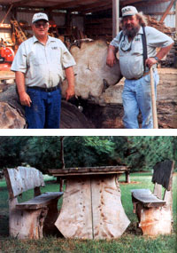

Being "Treeincarnaters" has become a profitable part-time business for woodworkers Mark Udey and Ray Lindgren. Their full-time jobs maintaining roads and mowing give them plenty of opportunity to observe the changing landscape around Swede Home, Nebraska. Thrifty by nature, they noticed how many storm-damaged and bulldozed logs were ending up in brush piles or landfills-potentially good lumber that only needed transportation and sawing. After Ray, who makes rolltop desks, watched a custom sawyer turn a log into lumber, he and Mark decided they wanted to make their own lumber.
About five years ago, Mark and Ray became the owners of a small sawmill, for the price of a new pickup, and built a shed and a solar kiln for curing lumber.
They had two goals: One was to have fun, now and in the future: "We want a big pile of free lumber so we can putter at woodworking when we retire," Mark says. Secondly, they hoped to make some money, to pay for the sawmill and to supplement their retirement. They began with one simple rule: They resolved not to harvest any trees just for lumber. They would only cut wood that would otherwise go to waste.
Mark and Ray salvage logs from storm damaged trees in nearby cities; once they even followed a tornado to see if it would uproot any interesting trees. It didn't, but on the way back they spotted a farmer bulldozing walnut logs to clear more farmland. They got the owner's permission and salvaged some of the wood.
Even on the relatively treeless Nebraska prairie, there's more wood to be salvaged than the Treeincarnaters can handle. Mark estimates that any city of 50,000 or more easily generates enough "waste" wood to keep a custom sawyer busy. "There's no doubt about it," says Dennis Adams, Nebraska Forest Service program leader for rural forestry, "a lot of logs go into landfills and burn piles."
In just three years, the mill has paid for itself. The Treeincarnaters earn money from custom sawing-customers either pay by the hour or in shared lumber. Mark and Ray also sell boards and their own finished products. They build flower boxes, make picture frames from knotholes, and create rustic benches and tables. And nothing goes to waste: They fashion lower-grade lumber into cattle feed bunks.
A favorite part of the process for Mark and Ray is the first few cuts into each log, which give them a glimpse of the wood's pattern. "Each tree has its own personality," Ray says. "We're getting to where we can see what's in each tree."
|
 Ray Lindgren (left) and Mark Udey (right), the Treeincarnaters. Bottom: This picnic table was made from untreated cedar. |
|
|